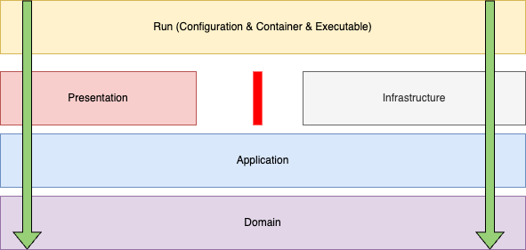

Overview¶
MetaboLights WS3 is designed to address the latest goals and requirements of MetaboLights.
Separation of Concerns: Different concerns (presentation , business logic and data access) should be isolated each other. Especially, business logic does not need to know how data is stored or managed.Maintainability: Architecture should enable more maintainable code. To achieve this, Well defined layers should be maintained based on separation of concerns instead of external framework dependent spaghetti code. Layers and layer dependencies should be checked automatically.Framework Independence: Business logic should not depend on external frameworks to make it easy to upgrade them or use different frameworks without affecting remaining code. MetaboLights uses different frameworks and external services and over the years, any dependencies cause major issues for applications upgrades or infrastructure changes.Testability: Architecture should enable to change application configuration and run unit, integration, functional and non-functional tests.Extensible: Architecture should enable to add new components or new frameworks.Flexible: Architecture can enable to define and run different applications (multiple REST API servers, CLI applications) on same repository.Scalable: Each application should run as stateless and can be deployed in a container.
Inspiration
MetaboLights WS3 is inspired from the following software principals, architectures and approaches:
- SOLID (Single-responsibility, Open-closed Principle, Liskov substitution, Interface segregation, Dependency inversion) Object Oriented Design Principles
- Domain Driven Design (DDD)
- Command Query Responsibility Segregation (CQRS)
- Clean Architecture
- Onion Architecture
- Hexagonal / Port & Adaptor Architecture
MetaboLights Ws3 Architecture¶
MetaboLights Ws3 architecture has domain, application, presentation and infrastructure core layers, and an additional layer named run to customize endpoints and executables. You can find its layers and their dependency hierarchy below:

General design principles¶
- Each layer can use the lower layer(s) but not higher layers. For example,
infrastructurelayer can import bothapplicationanddomainlayer modules butapplicationlayer can only import modules fromdomainlayer. infrastructureandpresentationlayers are on the same level and they are isolated. They do not import any modules from each other.- All external services (e.g., external web services) and python package dependencies (postgresql, redis, elasticsearch, etc.) are isolated from
applicationlayer modules. Application modules only use interfaces. Interfaces are implemented ininfrastructurelayer. applicationlayer modules do not know how domain entities are stored and managed (on NFS, SQL or NoSQL DB, Object Storage, etc.). They use only repository interfaces to process them.- Only
presentationlayer modules will check authentication or authorization (Role based authentication and authorization). There will be no logic to check authentication or authorization inapplicationorinfrastructurelayer modules (They may access authentication and authorization information in read-only mode). - All application logic should be implemented in
applicationlayer not inpresentationorinfrastructurelayer. presentationlayer modules should implement only RestAPI or CLI inputs and outputs (authentication and authorization). Any business logic should be moved to application and domain layer.- Implementation layer modules should implement only application interfaces.
- Any external python package used in
presentationorinfrastructurelayer is defined as an optional dependency (group). - An
extradependency name is defined for each executable defined inrunlayer dependency_injectorcontainers will be defined for each executable inrunlayer.- Prefer to implement and use async coroutines for time consuming operations (external service calls, time consuming tasks etc.)
Layers and design principles¶
Domain layer¶
Domain layer contains only MetaboLights specific domain classes, enumerations, decorators, exceptions and basic utility methods.
Domainlayer imports onlycore Python packagesand the following libraries:pydanticmetabolights-utils- Core utility libraries:
pyyaml,python-dateutil,pytz
Application layer¶
-
Applicationlayer imports onlydomainlayer packages. The only exception is async tasks inapplicationlayer. They usedependency_injectorpackage for injection of services. -
All methods and classes in
applicationlayer use interfaces to access infrastructure components and services. -
Applicationlayer modules do not import any external python libraries (e.g., celery, redis, etc.) in. Instead of importing any external library, a new service or component may be defined ininfrastructurelayer. To implement a new service or component:- Define interfaces in
applicationlayer. - Create any required domain objects in
domainlayer. - Implement interfaces in
infrastructurelayer. - Update
dependency_injectorcontainer inrunlayer to use it.
- Define interfaces in
- Initial interfaces in
applicationlayers are listed below:AsyncTaskServiceAuthenticationService,AuthorizationServiceandIdentityServiceCacheServicePolicyServiceStudyMetadataService
- Repositories are also defined as interfaces. e.g.
Study,User,ValidationReport,ValidationOverride,StudyObject, etc. entity repositories. - Application related logic is implemented in
use_casespackage. any module inuse_casespackage can import any other packages inapplicationlayer. - All async tasks are implemented in
remote_taskspackage and they do not importuse_casesmodules.
You can find application layer packages and their dependency hierarchy below:

Presentation layer¶
Presentationlayer can importsapplicationanddomainlayer packages. It may also importdependency_injectorand presentation related libraries (e.g., FastAPI, click).Presentationlayer do not import anyinfrastructurelayer packages inpresentationlayer.- Rest API, CLI or other executable can be defined as a presentation.
- Rest API endpoints are defined within API groups and each API group has managed versions. Initial Rest API groups are
submission,auth,curation,submission, andpublic.Submission Rest API group: It provides endpoints to create and update MetaboLights submissions. Authentication is required to use endpoints.Curation Rest API group: It provides endpoints to curators to run curation tasks on submitted studies and make them public. Authentication is required to use endpoints.Public Rest API group: It provides endpoints to access MetaboLights studies.Auth Rest API group: It provides to endpoints to create and revoke JWT tokens.
- Each user or service that wants to access any authorized endpoints should have a valid JWT token. Only JWT token is used to authorize requests.
- Rest API authentication will be managed within authorization middleware.
Infrastructure layer¶
Infrastructurelayer modules can importdependency_injectorand any external libraries (e.g., redis, elasticsearch, celery, etc.) as well asapplicationanddomainlayer.Infrastructurelayer modules do not import anypresentationlayer modules.- Multiple implementations can be defined for an interface defined in
applicationlayer. For example, there are proxy and standalone implementations for auth services. Each implementation is isolated from each others. - Initial Service and repository implementations:
- AsyncTaskService:
Celeryandthread(for development) implementations - AuthenticationService, AuthorizationService and IdentityService:
mtbls_ws2 proxyandstandaloneimplementations. - CacheService:
Redis,Redis sentinelandin-memory(for development) implementations - PolicyService: Open policy agency (
OPA) implementation - StudyMetadataService:
NFSandmongodb(in progress) implementations - ValidationOverrideService, ValidationReportService:
NFSandmongodb(in progress) implementations - Repositories:
Study,Submitter:postgresqlandsqlite(for development) implementationsValidationReport,ValidationOverride:NFSandmongodb(in progress)InvestigationFileObject,IsaTableObject(SampleFile,AssayFileAssignmentFile):NFSandmongodb(in progress)FileObject: to store data folder content.mongodb(in progress)
- AsyncTaskService:
Run layer¶
Runlayer definesdependency_injectorcontainer and runs executable inpresentationlayer (submission API, public API, worker, etc.).- Initial executables are:
Submission Rest API: It uses celery async application, NFS and PostgreSQL based repositories, redis cache service and proxy authentication service.Submission Rest API Worker: Celery worker to run submission remote tasksSubmission Rest API Worker Monitor: Flower executable to monitor celery tasks
- Log filters and application configuration files are customized depends on selected presentation layer application and service implementations.
- Unit tests overrides async task, auth, and cache services. Postgresql database is also overriden by Sqlite database to run unit tests.